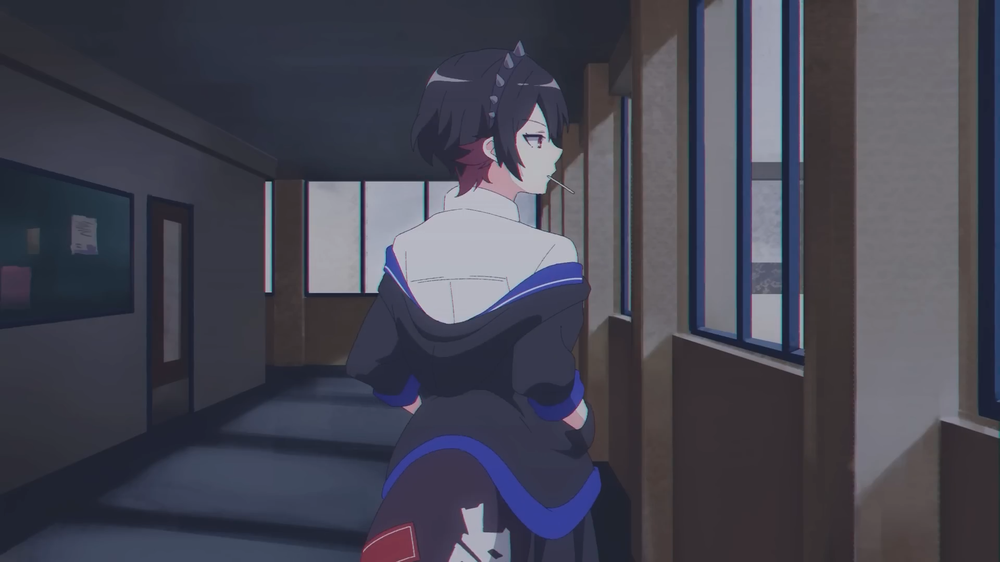
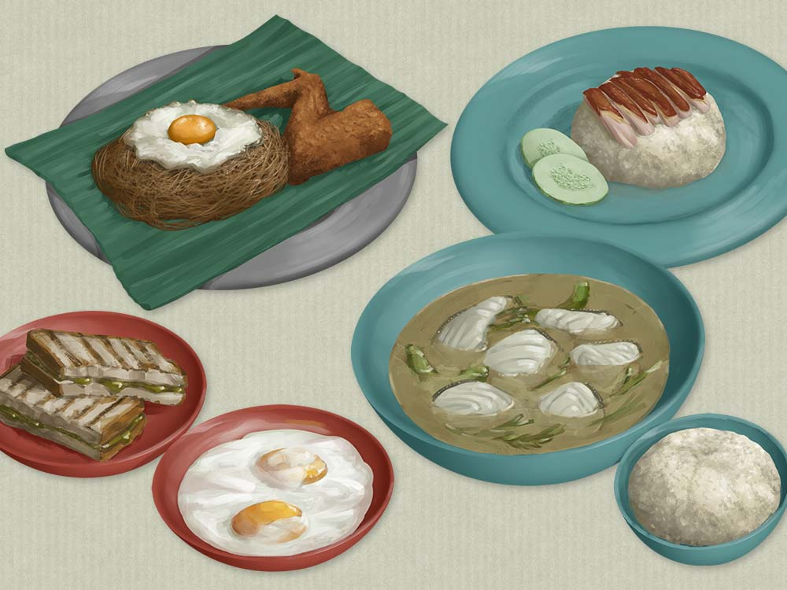
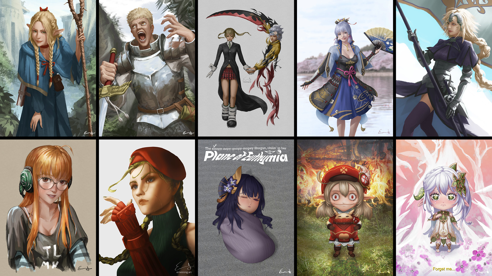
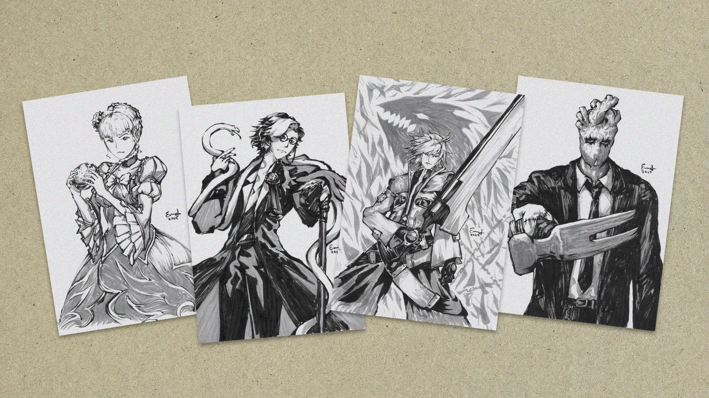
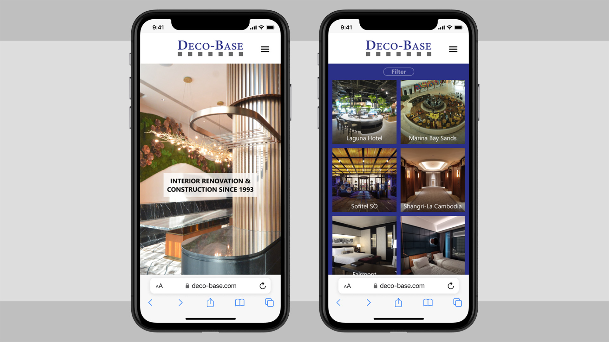
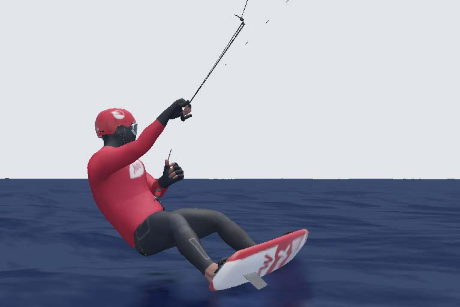
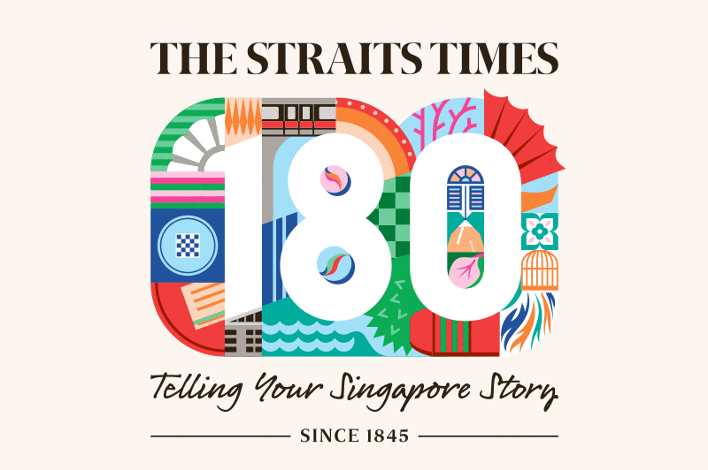

This site is currently under construction :)
“Designing Small Spaces” - Interactive & Print Graphics (The Straits Times)
Services: 3D, Illustration, Motion
Completed 3D Graphics & Illustrations for a story on furnishing small apartments published by The Straits Times.
Zenless Zone Zero (Hoyoverse) - Anime Background Illustrations
Services: Illustration
Backgrounds for a promotional short commissioned by game developer Hoyoverse for their game “Zenless Zone Zero”.
Singapore Hawker Food Illustrations (The Straits Times)
Services: Illustration
A series of food illustrations completed for an article about affordable healthy eating in Singaporean food courts.
Character Illustration - Digital Painting (Personal Work)
Services: Illustration
Hand-drawn digital paintings of various characters from popular media.
Sumi-E - Traditional Ink Brush Painting (Private Commissions)
Services: Illustration
Traditional Ink brush work on paper commissioned by private collectors.
Marketing Brochure and Website Design (Deco-Base Enterprise)
Services: UI/UX, Editorial
Portfolio booklet and website design for an established Interior Renovations and Construction Company.
Max Maeder - Olympic Kitesurfer 3D Model and Animation (The Straits Times)
Services: 3D, Motion
3D Model, rigged and animated in Blender for an interactive article about Singapore's Kitefoiling Olympic Competitor: Maximillian Maeder.
ST180 Logo Animation (The Straits Times)
Services: Motion
Animated in Adobe After Effects and exported via the LottieFiles Format for a full Vector Workflow to preserve clean edges for web use. The logo, provided by client, was created to commemorate The Straits Times' 180th Anniversary.
STfood Logo Design Update (The Straits Times)
Services: Illustration
Client wanted a more appetising illustrative logo with dynamic shape design as they felt that food is something people are passionate about so we ought to make a representation of that emotional response.